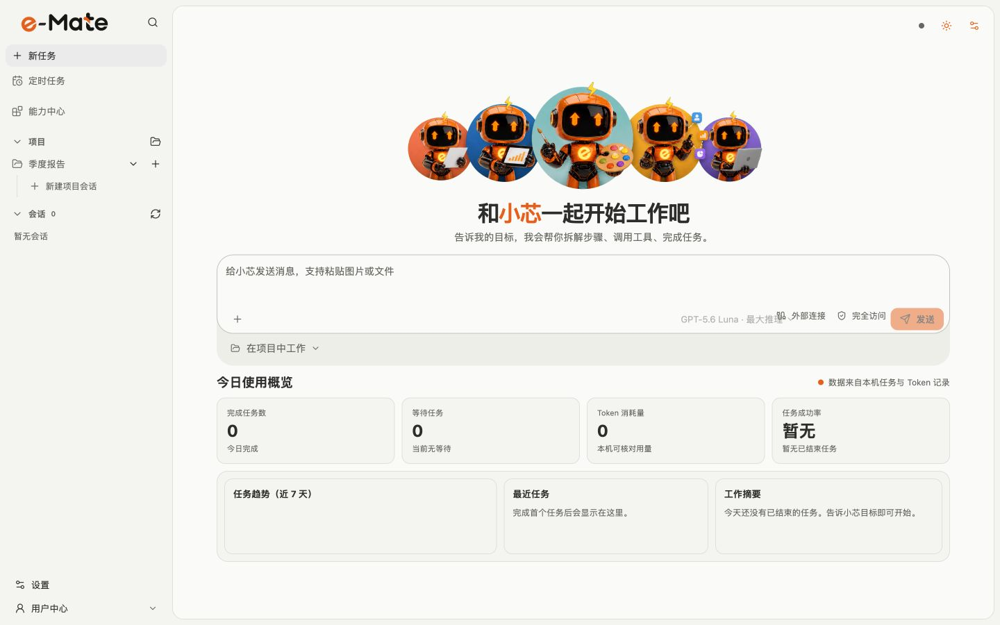

上下文延续
任务、资料和产物留在同一工作区，下次打开直接从上次进度继续。

让 Agent 真正参与工作
任务、资料和产物留在同一工作区，下次打开直接从上次进度继续。
小芯会按目标拆解步骤、调用工具，并把每次执行结果呈现在消息流中。
模型、权限、用量与审计由企业策略统一下发，重要操作始终可核对。
官方下载
请稍候。
安装帮助
页面会优先推荐当前设备；macOS Universal 安装包同时适用于 Apple 与 Intel 芯片。
请按系统提示完成首次打开。
再次打开会恢复本机任务；已安装 2.0.12 的用户可在应用内确认更新到 2.0.13，e-Mate 会校验、替换并自动重开。